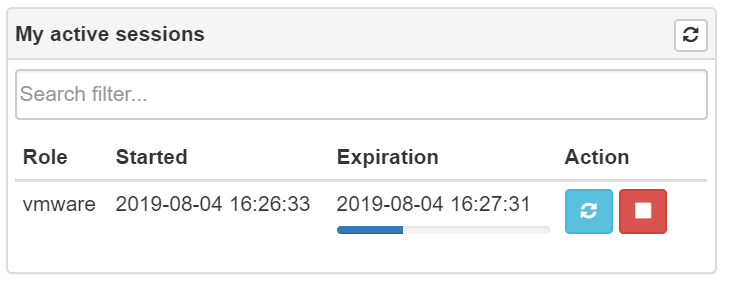

Just-in-time administration (JITA)¶
Just-in-time administration (JITA) is an approach for minimizing the privileged account attack vector in a security strategy, combined with a precise definition of assigned authorizations. Every time an eligible users needs to perform a task which requires membership in privileged groups, they enable such membership for defined period of time. The membership expire after a specified time period, so that a malicious user can’t steal the access.
JITA roles and sessions¶
After successfully login you can see JITA roles available at “JITA” part of portal.

At “My roles” panel you can start, stop or extend active JITA session. At start session dialog it is needed to set duration which should be less than maximum allowed TTL defined in role’s configuration and justification describing a reason.

Active JITA sessions of authenticated user are shown at “My active sessions” pannel.
